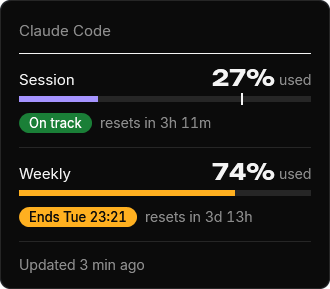
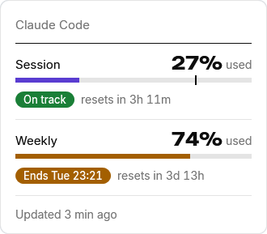
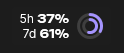
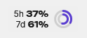
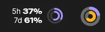
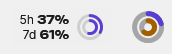

How much of Claude Code's session and weekly limits you have left, always in view on the Windows taskbar.




How much of Claude Code's session and weekly limits you have left, always in view on the Windows taskbar.
Two rings and a flyoutThe outer ring is the session, the inner one the week. Click the pill or the tray icon for the rest.


Flyout
Each limit with what it has used, a badge for the pace, and when it resets. Click the pill or the tray icon.
Taskbar pill
Both figures and the rings, just left of the tray icons.
Tray icon
The outer ring is the session, the inner one the week.
Install 3 steps
The zip from the latest release on GitHub. Unzip it where you keep your apps.
Until the app is signed, Windows warns about an unknown publisher: More info, then Run anyway. The pill appears on the taskbar, left of the tray icons.
Right-click the pill and choose Connect to Claude Code. It shows what changes in your settings.json, asks first and keeps a backup.